Config in refined_3dpw_*.npz. 35476 eligible instances (≥50 corr pts). Columns: crop | CameraHMR(red) | GT(blue) | DensePose IUV | loc-only(yellow) | loc+ori(green). Δ vs baseline; ori-Δ vs loc-only. Each band = 5.0% tail; 12 samples spread across it.
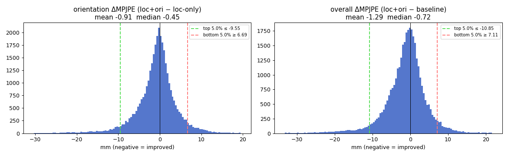
band: n=1774 instances threshold -9.55 mm band mean -17.48 median -14.02 most extreme -77.80 mm
| PA-MPJPE | MPJPE | PVE | |
|---|---|---|---|
| baseline | 59.5 | 197.7 | 185.3 |
| loc-only | 58.3 | 183.6 | 172.2 |
| loc+ori | 64.6 | 105.8 | 96.0 |
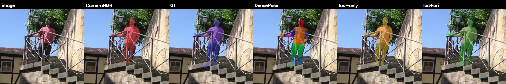
| PA-MPJPE | MPJPE | PVE | |
|---|---|---|---|
| baseline | 65.1 | 109.6 | 146.1 |
| loc-only | 63.5 | 106.9 | 144.1 |
| loc+ori | 63.2 | 75.1 | 107.9 |

| PA-MPJPE | MPJPE | PVE | |
|---|---|---|---|
| baseline | 71.2 | 123.8 | 148.1 |
| loc-only | 71.4 | 121.3 | 145.7 |
| loc+ori | 69.3 | 98.7 | 120.3 |
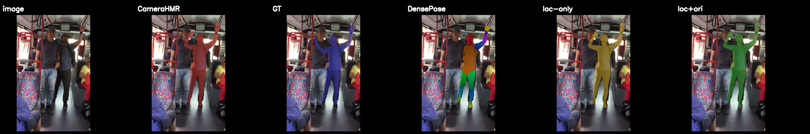
| PA-MPJPE | MPJPE | PVE | |
|---|---|---|---|
| baseline | 62.0 | 95.9 | 96.5 |
| loc-only | 63.1 | 95.0 | 96.4 |
| loc+ori | 67.4 | 76.0 | 83.0 |
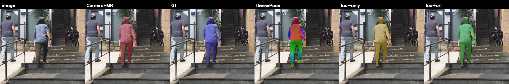
| PA-MPJPE | MPJPE | PVE | |
|---|---|---|---|
| baseline | 53.0 | 92.9 | 121.9 |
| loc-only | 52.9 | 93.6 | 121.8 |
| loc+ori | 49.0 | 77.1 | 99.4 |
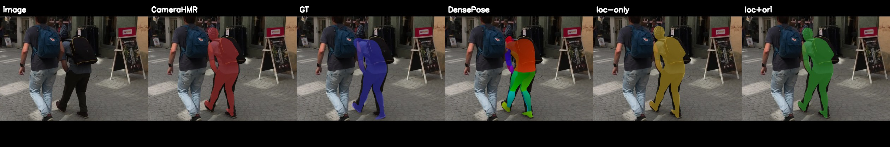
| PA-MPJPE | MPJPE | PVE | |
|---|---|---|---|
| baseline | 50.3 | 98.0 | 111.5 |
| loc-only | 50.8 | 96.8 | 110.4 |
| loc+ori | 56.2 | 82.0 | 100.1 |
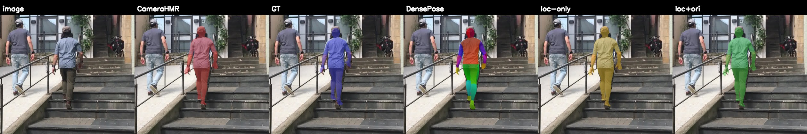
| PA-MPJPE | MPJPE | PVE | |
|---|---|---|---|
| baseline | 31.3 | 69.4 | 76.6 |
| loc-only | 32.3 | 66.3 | 74.1 |
| loc+ori | 37.9 | 53.1 | 64.6 |
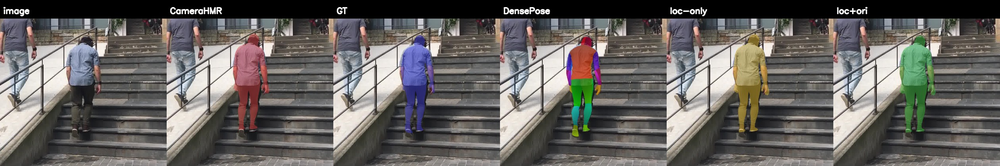
| PA-MPJPE | MPJPE | PVE | |
|---|---|---|---|
| baseline | 49.1 | 115.7 | 131.6 |
| loc-only | 48.7 | 116.9 | 133.2 |
| loc+ori | 50.1 | 104.8 | 122.4 |
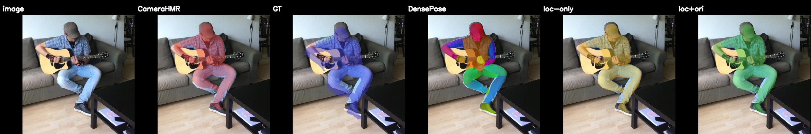
| PA-MPJPE | MPJPE | PVE | |
|---|---|---|---|
| baseline | 95.9 | 116.8 | 166.2 |
| loc-only | 95.3 | 115.9 | 164.9 |
| loc+ori | 92.0 | 104.7 | 154.6 |
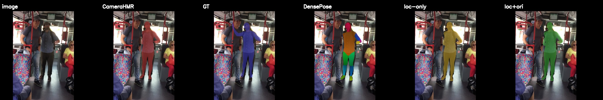
| PA-MPJPE | MPJPE | PVE | |
|---|---|---|---|
| baseline | 39.6 | 91.1 | 94.1 |
| loc-only | 38.6 | 94.9 | 96.9 |
| loc+ori | 38.3 | 84.4 | 87.8 |
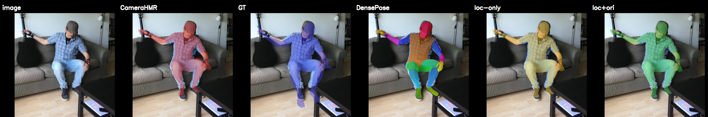
| PA-MPJPE | MPJPE | PVE | |
|---|---|---|---|
| baseline | 52.2 | 120.1 | 127.0 |
| loc-only | 51.0 | 121.3 | 128.9 |
| loc+ori | 51.7 | 111.3 | 119.1 |
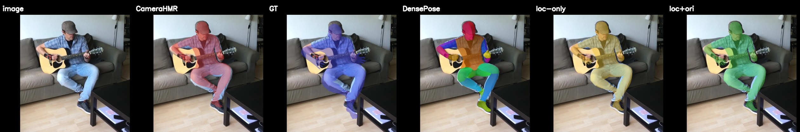
| PA-MPJPE | MPJPE | PVE | |
|---|---|---|---|
| baseline | 58.0 | 78.5 | 76.3 |
| loc-only | 58.3 | 78.6 | 76.6 |
| loc+ori | 65.3 | 69.0 | 75.5 |
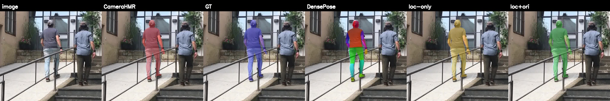
band: n=1774 instances threshold +6.69 mm band mean +11.32 median +9.38 most extreme +132.65 mm
| PA-MPJPE | MPJPE | PVE | |
|---|---|---|---|
| baseline | 25.2 | 59.0 | 60.1 |
| loc-only | 25.3 | 60.5 | 61.3 |
| loc+ori | 113.3 | 193.2 | 241.0 |

| PA-MPJPE | MPJPE | PVE | |
|---|---|---|---|
| baseline | 27.2 | 76.1 | 75.0 |
| loc-only | 27.3 | 77.4 | 76.0 |
| loc+ori | 25.9 | 97.8 | 100.0 |
| PA-MPJPE | MPJPE | PVE | |
|---|---|---|---|
| baseline | 51.6 | 89.7 | 108.5 |
| loc-only | 51.4 | 89.7 | 108.6 |
| loc+ori | 47.2 | 103.9 | 120.6 |
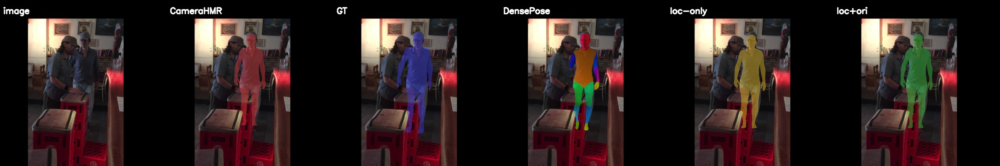
| PA-MPJPE | MPJPE | PVE | |
|---|---|---|---|
| baseline | 54.7 | 96.6 | 104.5 |
| loc-only | 54.8 | 95.2 | 102.8 |
| loc+ori | 54.1 | 106.9 | 118.2 |
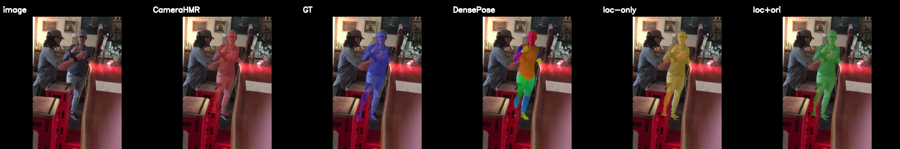
| PA-MPJPE | MPJPE | PVE | |
|---|---|---|---|
| baseline | 28.8 | 52.3 | 71.3 |
| loc-only | 29.2 | 51.6 | 70.0 |
| loc+ori | 32.2 | 62.2 | 85.5 |
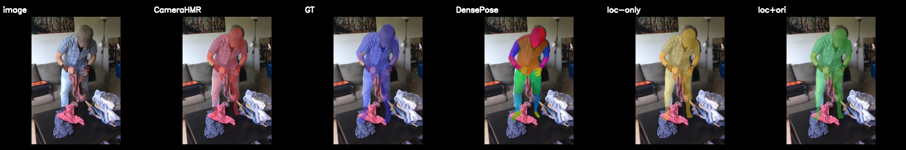
| PA-MPJPE | MPJPE | PVE | |
|---|---|---|---|
| baseline | 55.7 | 77.1 | 95.8 |
| loc-only | 54.7 | 76.7 | 95.4 |
| loc+ori | 55.9 | 86.5 | 111.7 |
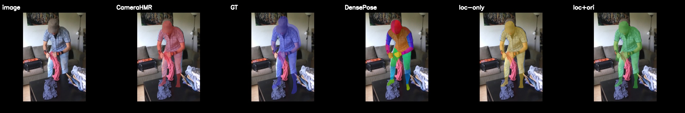
| PA-MPJPE | MPJPE | PVE | |
|---|---|---|---|
| baseline | 33.9 | 102.8 | 100.4 |
| loc-only | 31.9 | 99.2 | 97.1 |
| loc+ori | 28.9 | 108.2 | 107.0 |
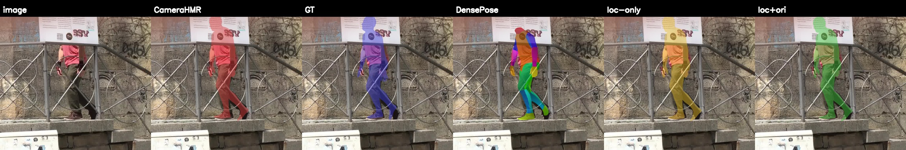
| PA-MPJPE | MPJPE | PVE | |
|---|---|---|---|
| baseline | 31.5 | 55.6 | 72.1 |
| loc-only | 29.4 | 50.9 | 65.9 |
| loc+ori | 31.7 | 59.3 | 77.3 |
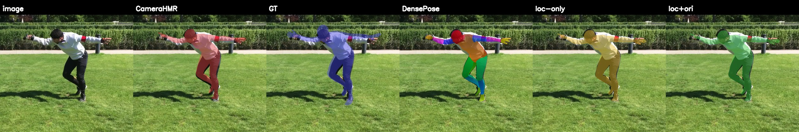
| PA-MPJPE | MPJPE | PVE | |
|---|---|---|---|
| baseline | 65.7 | 91.1 | 98.9 |
| loc-only | 65.4 | 90.7 | 98.4 |
| loc+ori | 65.4 | 98.5 | 109.1 |
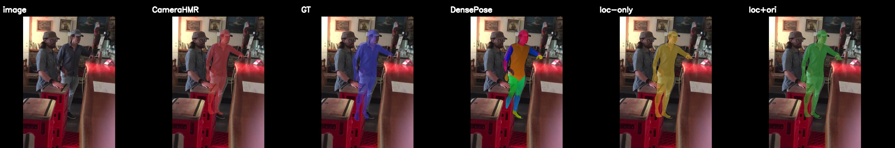
| PA-MPJPE | MPJPE | PVE | |
|---|---|---|---|
| baseline | 43.8 | 52.6 | 51.4 |
| loc-only | 44.0 | 53.4 | 51.6 |
| loc+ori | 51.2 | 60.9 | 71.1 |
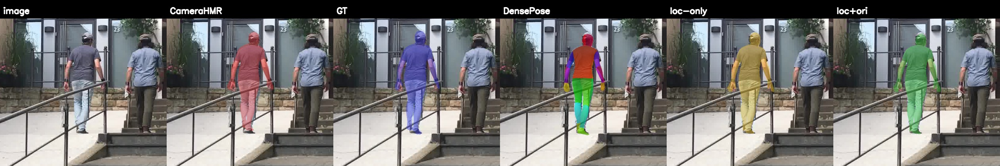
| PA-MPJPE | MPJPE | PVE | |
|---|---|---|---|
| baseline | 35.1 | 69.7 | 74.6 |
| loc-only | 34.2 | 66.4 | 70.2 |
| loc+ori | 35.1 | 73.4 | 79.3 |
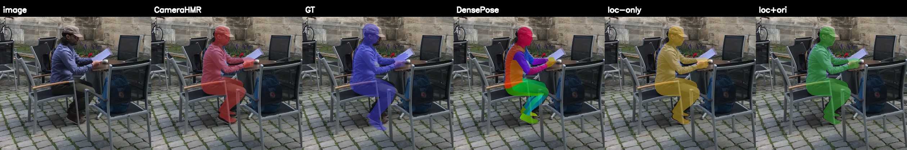
| PA-MPJPE | MPJPE | PVE | |
|---|---|---|---|
| baseline | 54.4 | 92.6 | 123.4 |
| loc-only | 52.6 | 94.1 | 124.6 |
| loc+ori | 47.6 | 100.8 | 129.7 |
band: n=1774 instances threshold -10.85 mm band mean -19.93 median -16.22 most extreme -120.34 mm
| PA-MPJPE | MPJPE | PVE | |
|---|---|---|---|
| baseline | 83.0 | 330.8 | 340.6 |
| loc-only | 87.4 | 264.2 | 271.9 |
| loc+ori | 88.8 | 210.5 | 222.1 |
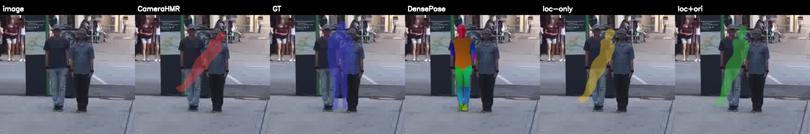
| PA-MPJPE | MPJPE | PVE | |
|---|---|---|---|
| baseline | 65.1 | 109.6 | 146.1 |
| loc-only | 63.5 | 106.9 | 144.1 |
| loc+ori | 63.2 | 75.1 | 107.9 |
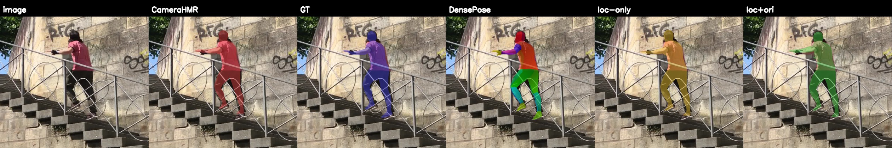
| PA-MPJPE | MPJPE | PVE | |
|---|---|---|---|
| baseline | 49.9 | 104.0 | 99.7 |
| loc-only | 47.5 | 93.4 | 90.5 |
| loc+ori | 51.0 | 79.2 | 79.4 |
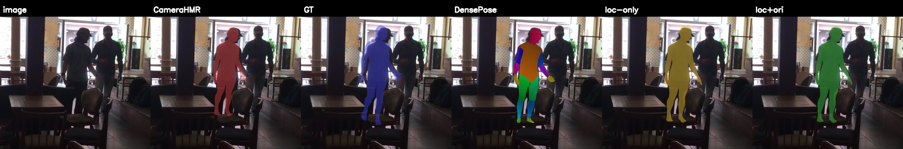
| PA-MPJPE | MPJPE | PVE | |
|---|---|---|---|
| baseline | 51.7 | 86.8 | 119.3 |
| loc-only | 50.6 | 85.4 | 116.8 |
| loc+ori | 43.3 | 65.7 | 90.6 |
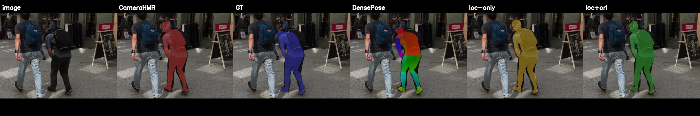
| PA-MPJPE | MPJPE | PVE | |
|---|---|---|---|
| baseline | 39.2 | 92.0 | 108.2 |
| loc-only | 39.1 | 89.7 | 105.5 |
| loc+ori | 43.9 | 73.3 | 90.4 |
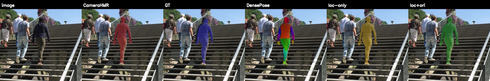
| PA-MPJPE | MPJPE | PVE | |
|---|---|---|---|
| baseline | 33.3 | 76.9 | 90.2 |
| loc-only | 33.4 | 75.3 | 88.4 |
| loc+ori | 41.0 | 59.9 | 74.9 |
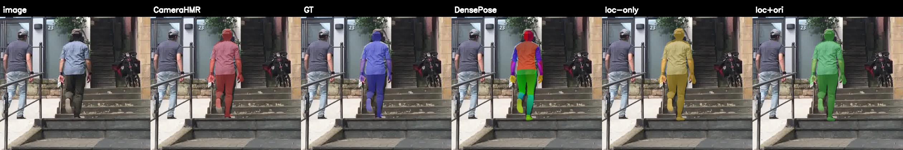
| PA-MPJPE | MPJPE | PVE | |
|---|---|---|---|
| baseline | 46.9 | 105.0 | 132.1 |
| loc-only | 46.3 | 101.6 | 129.0 |
| loc+ori | 46.7 | 89.4 | 114.5 |
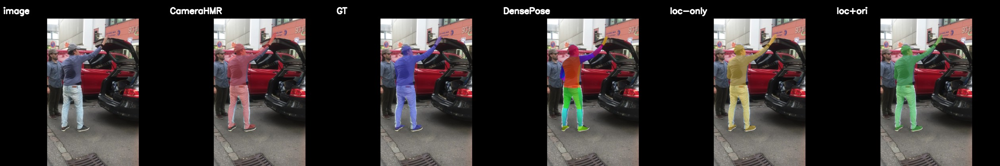
| PA-MPJPE | MPJPE | PVE | |
|---|---|---|---|
| baseline | 36.9 | 76.9 | 86.8 |
| loc-only | 37.8 | 77.0 | 87.2 |
| loc+ori | 37.4 | 62.9 | 72.7 |
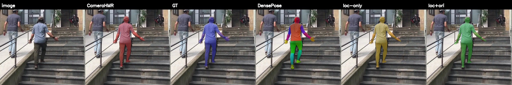
| PA-MPJPE | MPJPE | PVE | |
|---|---|---|---|
| baseline | 29.5 | 67.3 | 78.5 |
| loc-only | 29.7 | 65.9 | 77.3 |
| loc+ori | 32.3 | 54.2 | 66.4 |
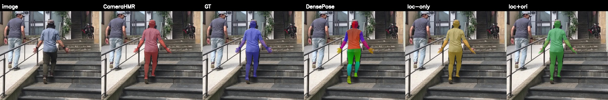
| PA-MPJPE | MPJPE | PVE | |
|---|---|---|---|
| baseline | 27.5 | 76.8 | 81.7 |
| loc-only | 27.6 | 68.7 | 72.2 |
| loc+ori | 27.8 | 64.6 | 68.6 |
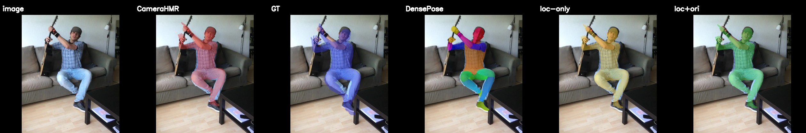
| PA-MPJPE | MPJPE | PVE | |
|---|---|---|---|
| baseline | 50.4 | 91.1 | 112.5 |
| loc-only | 48.8 | 86.0 | 105.2 |
| loc+ori | 46.7 | 79.7 | 97.9 |
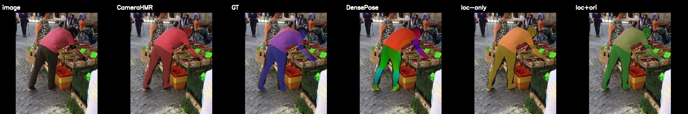
| PA-MPJPE | MPJPE | PVE | |
|---|---|---|---|
| baseline | 34.9 | 91.8 | 106.5 |
| loc-only | 33.5 | 84.8 | 96.9 |
| loc+ori | 33.5 | 80.9 | 92.9 |
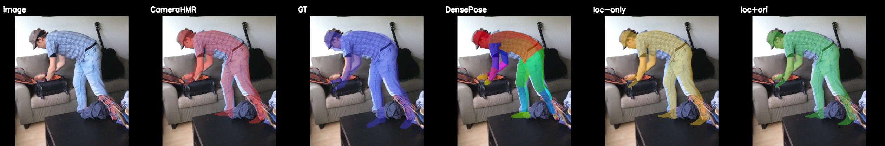
band: n=1774 instances threshold +7.12 mm band mean +12.24 median +9.84 most extreme +134.14 mm
| PA-MPJPE | MPJPE | PVE | |
|---|---|---|---|
| baseline | 25.2 | 59.0 | 60.1 |
| loc-only | 25.3 | 60.5 | 61.3 |
| loc+ori | 113.3 | 193.2 | 241.0 |
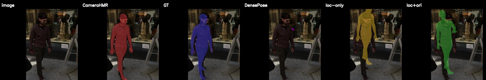
| PA-MPJPE | MPJPE | PVE | |
|---|---|---|---|
| baseline | 38.6 | 78.5 | 88.6 |
| loc-only | 38.3 | 80.1 | 89.8 |
| loc+ori | 41.9 | 100.9 | 117.3 |
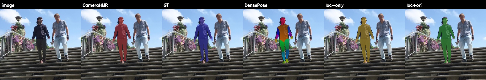
| PA-MPJPE | MPJPE | PVE | |
|---|---|---|---|
| baseline | 50.6 | 88.3 | 98.2 |
| loc-only | 51.7 | 91.1 | 101.1 |
| loc+ori | 50.2 | 104.1 | 117.8 |
| PA-MPJPE | MPJPE | PVE | |
|---|---|---|---|
| baseline | 37.5 | 58.7 | 72.7 |
| loc-only | 37.7 | 60.4 | 74.4 |
| loc+ori | 38.7 | 71.6 | 86.1 |
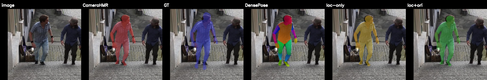
| PA-MPJPE | MPJPE | PVE | |
|---|---|---|---|
| baseline | 49.0 | 76.4 | 75.2 |
| loc-only | 49.6 | 79.9 | 78.3 |
| loc+ori | 50.0 | 87.5 | 86.2 |
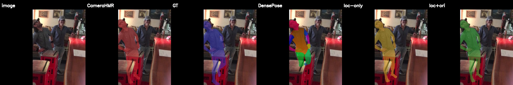
| PA-MPJPE | MPJPE | PVE | |
|---|---|---|---|
| baseline | 49.0 | 66.7 | 73.7 |
| loc-only | 46.6 | 68.3 | 74.6 |
| loc+ori | 46.8 | 77.1 | 83.9 |
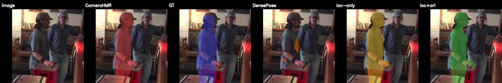
| PA-MPJPE | MPJPE | PVE | |
|---|---|---|---|
| baseline | 37.6 | 42.0 | 44.0 |
| loc-only | 36.7 | 41.6 | 43.6 |
| loc+ori | 40.7 | 51.6 | 56.5 |
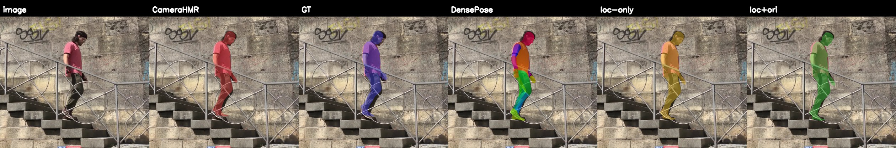
| PA-MPJPE | MPJPE | PVE | |
|---|---|---|---|
| baseline | 36.0 | 58.0 | 57.6 |
| loc-only | 34.3 | 55.8 | 53.7 |
| loc+ori | 34.3 | 66.8 | 68.4 |
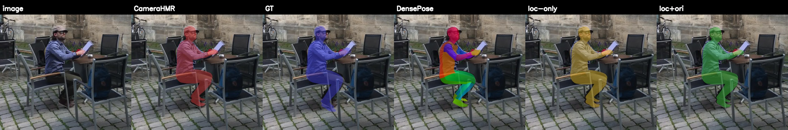
| PA-MPJPE | MPJPE | PVE | |
|---|---|---|---|
| baseline | 43.8 | 52.6 | 51.4 |
| loc-only | 44.0 | 53.4 | 51.6 |
| loc+ori | 51.2 | 60.9 | 71.1 |

| PA-MPJPE | MPJPE | PVE | |
|---|---|---|---|
| baseline | 54.9 | 78.6 | 83.2 |
| loc-only | 54.9 | 82.9 | 87.4 |
| loc+ori | 55.8 | 86.5 | 91.5 |
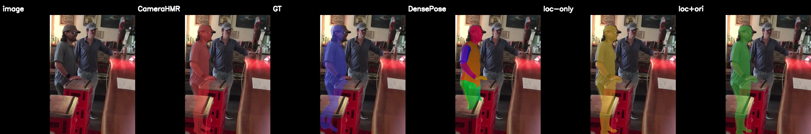
| PA-MPJPE | MPJPE | PVE | |
|---|---|---|---|
| baseline | 17.6 | 45.0 | 47.1 |
| loc-only | 18.2 | 44.1 | 45.7 |
| loc+ori | 17.8 | 52.5 | 54.4 |
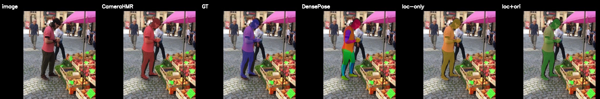
| PA-MPJPE | MPJPE | PVE | |
|---|---|---|---|
| baseline | 18.2 | 24.5 | 34.8 |
| loc-only | 17.9 | 25.0 | 35.0 |
| loc+ori | 20.0 | 31.6 | 42.3 |
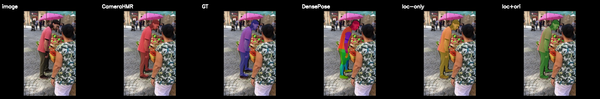